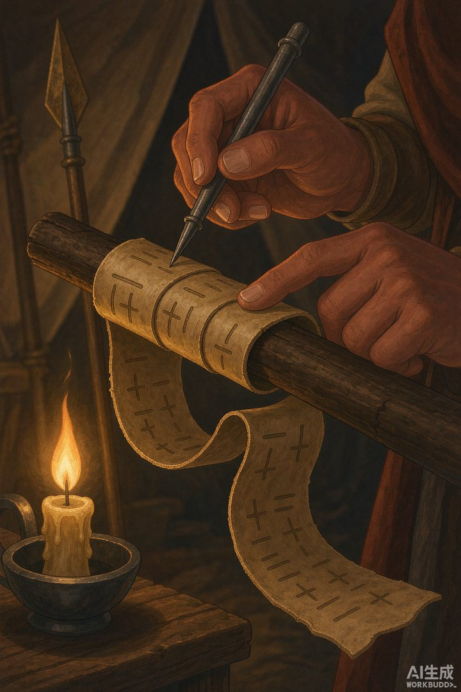
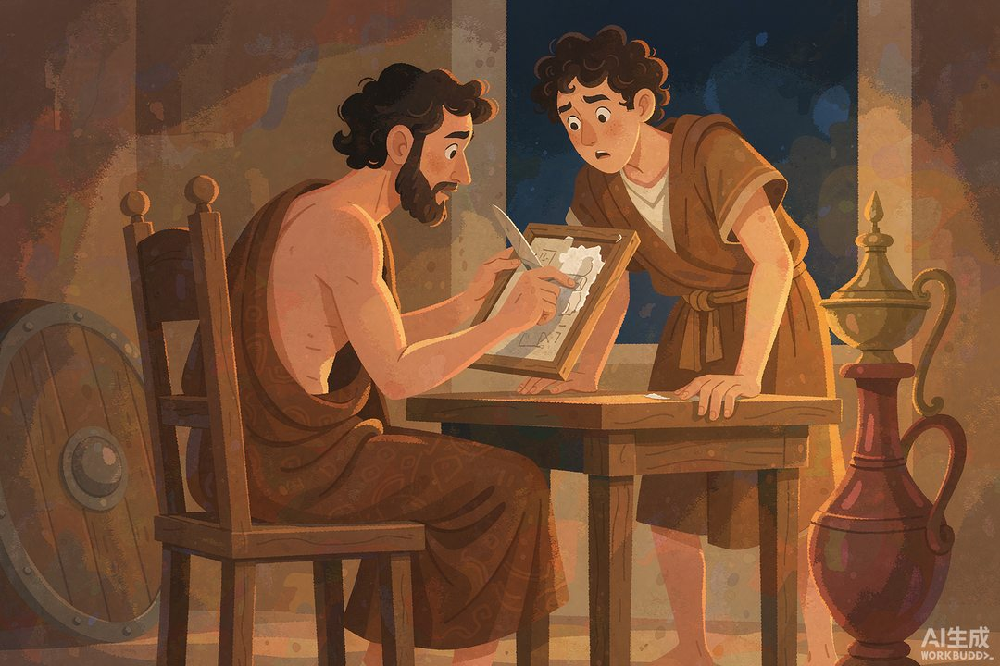
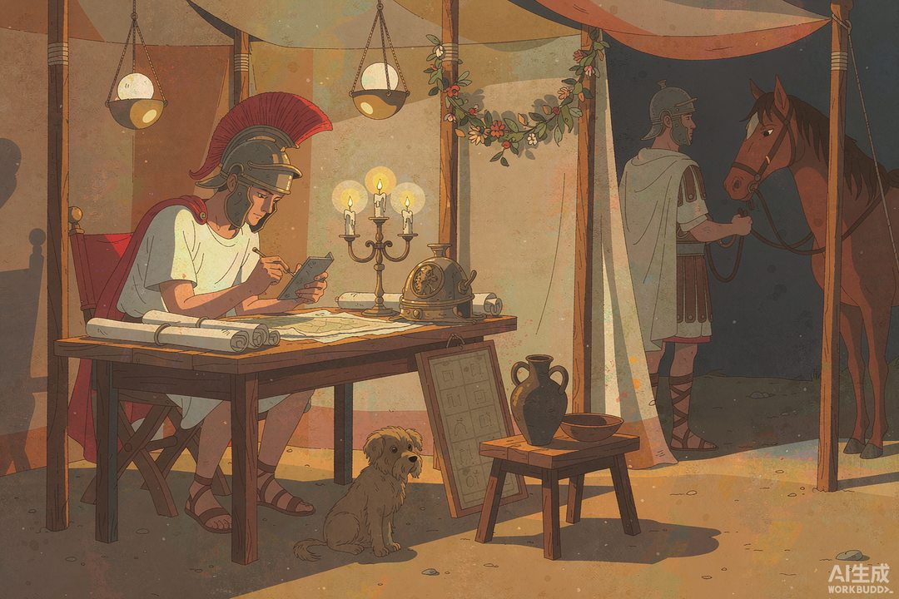

|
信息传播那些事儿 · 卷一 信息的黎明 · 第 17 篇 |
|
古代加密术：蜡板、隐写与倒着写的字 —— 保密与窃密，是一对双胞胎 |

▲ 斯巴达密码棒：皮条缠上才是一封信，解下来就是一串乱码（AI 生成示意图）
|
前面几站都在解决"怎么传得快、传得广"，这一站解决一个更古老的需求：有些话，只许两个人懂。战报、密约、篡位计划——古代宫廷和战场的秘密战，催生了人类第一批加密技术。看完你会发现：今天密码学的全部思想，祖先们已经把雏形都玩过了。 |
先把话说透：保密的需求，几乎和文字本身一样老。目前已知最早的案例在古埃及——约公元前 1900 年，一座贵族墓里的铭文用了非标准的变形象形文字。注意，那不是军事机密，抄写员故意把字刻得玄乎，纯粹为了让墓志显得神秘尊贵。而约公元前 1500 年的美索不达米亚泥板上，有人把陶釉配方用语音加密的方式记录——那是实打实的商业机密，防止同行偷师。一个为了神秘感，一个为了保护配方，密码学的两大原始动机：装神弄鬼和守住饭碗，从文明之初就齐了。
一 | 一根木棒，第一件军用密码装备 |
第一种正经的军事密码装置，来自希腊最能打的斯巴达，名叫 Scytale（音"斯基塔勒"）。原理简单到离谱：一根木棒，一条窄皮带。写信时把皮条密密缠在棒上，沿着棒身写字；写完解下来，皮条上的字母顺序全乱了，就是一串无意义的乱码。收信人拿一根同样粗细的木棒把皮条缠回去，原文自己浮出来。
妙就妙在"钥匙"是物理的：木棒的粗细，就是密码系统的密钥。信使被抓，敌人搜出皮条，看到的只是乱码——除非他碰巧有一根直径相同的棒。普鲁塔克记载，斯巴达每次派将军出征，都要先和将军核对两根一模一样的木棒，一人一根。更狡猾的是，信使平时会把皮条伪装成腰带系在身上，有字的一面朝内——密文就贴身挂在敌人眼皮底下晃。
它实战救过命：公元前 404 年，斯巴达名将吕山德在波斯军营里见到一个浑身是伤的信使——一路奔波只剩五个幸存者之一。信使递上一封正常问候的信，吕山德看完不动声色，只要求把对方的"腰带"留下。皮带缠上他自己的密码棒，跳出来的消息是：波斯人准备偷袭你。吕山德因此提前布防，躲过一劫。信是幌子，腰带才是真信——隐写的经典操作。

▲ 刮开蜡层：表面是空白信，底下藏着真消息（AI 生成示意图）
二 | 隐藏的艺术：蜡板和头皮 |
斯巴达皮带玩的是"打乱字母"，属于加密的正规军。而希罗多德在《历史》里记下的两则故事，属于另一个门派——隐写术：不藏内容，藏"存在本身"。
第一则是蜡板警告。公元前 480 年，被放逐的斯巴达前王德马拉图斯得知波斯大军要入侵希腊，想把消息送出去。明着送信必被波斯岗哨搜查，他的办法是：把折叠蜡板的蜡刮掉，把字直接刻在木板底上，再重新浇一层蜡盖住——运到希腊时板面一片空白，守卫看了直摇头。聪慧的斯巴达王后戈尔戈猜到了蹊跷：蜡是后浇的。刮开蜡层，波斯入侵计划赫然在目。希腊人由此提前备战，后来才有温泉关和萨拉米斯的一系列故事。
第二则更野。米利都僭主希斯提亚欧斯被波斯大王扣在身边当人质，想给远方的女婿递反信。他的方案：剃光一个奴隶的脑袋，把消息纹在头皮上，等头发长回来，再让奴隶大摇大摆走出关卡。对面接头的人只需要一把剃刀。消息在路上走了几个星期，全天下的哨兵都看不见它——因为它长在头发底下。这两个案例合起来，就是隐写术的完整精神：最好的保密，是让敌人不知道有秘密存在。
三 | 凯撒的移位：把字母表推三格 |
正面硬刚字母的加密，最有名的选手是凯撒。苏维托尼乌斯在《十二凯撒传》里记下了他的军中习惯：给西塞罗和亲信写机密信件时，把字母表整体后移三位——A 写成 D，B 写成 E。于是 CAESAR 写出来是 FDHVDU，"AT DAWN"（黎明进攻）变成 DW GDZQ。敌方就算截获，看到的是天书。
以今天的眼光看，这个"凯撒密码"幼儿园级：字母表只有 25 种移位方式，挨个试完也就几分钟。但在当时它是降维打击——因为"破译学"这门反制科学还没被发明。对手大多没形成"信息可以被系统性变换"这个概念，看到乱码的第一反应是看不懂，而不是"一定能解开"。加密和破译这对双胞胎的军备竞赛，此时才刚鸣枪。
竞赛的下一棒，时间跳到公元 9 世纪：阿拉伯学者金迪写下《解译密码信息手稿》，发明了频率分析——任何一种语言的文本里，各字母出现频率是稳定的（英语里 E 最多）。拿密文统计一遍，出现最狠的符号八成就是 E，整个替换表顺势崩盘。凯撒密码从此沦为儿童游戏。顺便说个冷知识：英语"cipher"（密码）一词源自阿拉伯语 sifr（零）——"零"这个符号，在中世纪欧洲人眼里本来就是神秘咒语。

▲ 罗马统帅的营帐夜话：小铅板上写密令，信使连夜出发（AI 生成示意图）
四 | 三件古董，三颗现代种子 |
把古董们排成一行，会看见现代密码学的全部种子：斯巴达密码棒给了"密钥"概念——算法可以人人知道，钥匙只有两人有；它"换位置不改字"的置换思想，今天仍在最先进的加密算法里跑龙套。蜡板和头皮给了"隐写"概念——藏信息不如藏"有信息"这件事，今天水印、数字盲水印走的是同一门派。凯撒移位给了"替换"概念——把明文按规则映射成密文，是所有现代密码的原点。而金迪的频率分析则证明了一件事：有了统计学，锁得住总有人开得动。
更深一层看，古代加密术其实揭示了一条信息世界的底层规律：保密从来不是一锤子买卖，是一场永不停歇的军备竞赛。你发明密码棒，我就收集不同粗细的木棒；你移位三位，我就统计字母频率。这场竞赛从青铜时代一路打到今天的量子密钥，双方武器换了一万代，棋盘和规则两千六百年没变过：我要说，你偷听，我们俩都变聪明。
卷一的故事到这里，已经把信息世界的地基走完了一遍：嘴、火、腿、广场、人脑、密写——没有文字的年代，人类把信息的生产、传输、存储、保密各自玩出了花。但所有这些，都只是"文字时代的前夜"。下一站是卷一的收尾：回望这十八站的旅程，看看文字出现前夜，信息的权柄到底攥在谁手里——而文字一登场，这套秩序又是怎么被彻底掀翻的。
|
数字锚点 · 古代加密术 | |||||||||||||||
| |||||||||||||||
|
🔔 下篇预告 · 第 18 篇《卷一小结：文字出现前夜》——十八站走完，回头一看：信息的权柄一直攥在三种人手里——离神最近的、腿最长的、嗓门最大的。可文字一出现，这套秩序瞬间崩塌。谁都能读、谁都能写、谁都能篡——人类历史上第一场"信息平权"运动，怎么爆发的？ |
史料转引：普鲁塔克《吕山德传》关于斯巴达密码棒（Scytale）与公元前 404 年皮带密信的记载；希罗多德《历史》关于蜡板隐写（德马拉图斯）与头皮纹字（希斯提亚欧斯）的记载；苏维托尼乌斯《十二凯撒传》关于凯撒移位密码的记载；金迪《解译密码信息手稿》及古典密码史通行研究。配图为 AI 生成示意图。